TeamFlow UI specificationTeamFlow UI specification
17 proposed app screens for the two-day Flutter workshop. Employee, Admin and Super Admin views use the same design system and sample records. These designs have not yet been compared with a running Flutter app.
Drag individual SVG files into Figma. Screens are 390 × 844. SVG shapes and text are editable; import does not create Auto Layout or interactive app behavior. Some long lists scroll in the implementation.
01. Phone sign-in
All · /login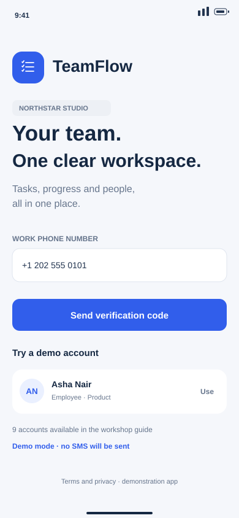
02. Verify code
All · /verify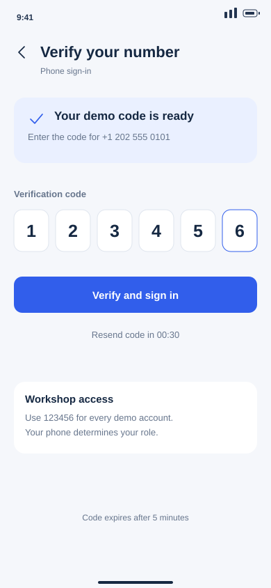
03. Employee dashboard
Employee · /home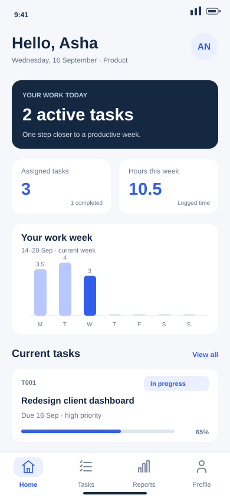
04. Admin dashboard
Admin · /home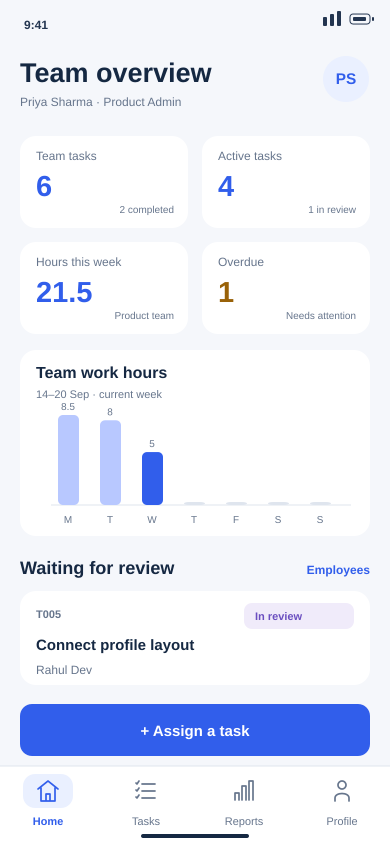
05. Super Admin dashboard
Super Admin · /home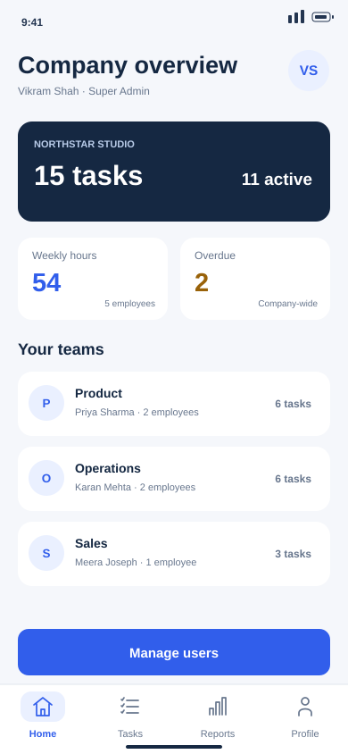
06. Task list
Employee · /tasks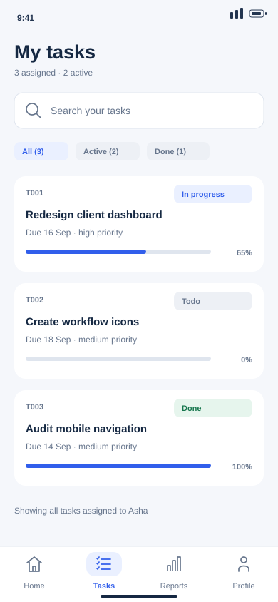
07. Task detail
Employee · /tasks/T001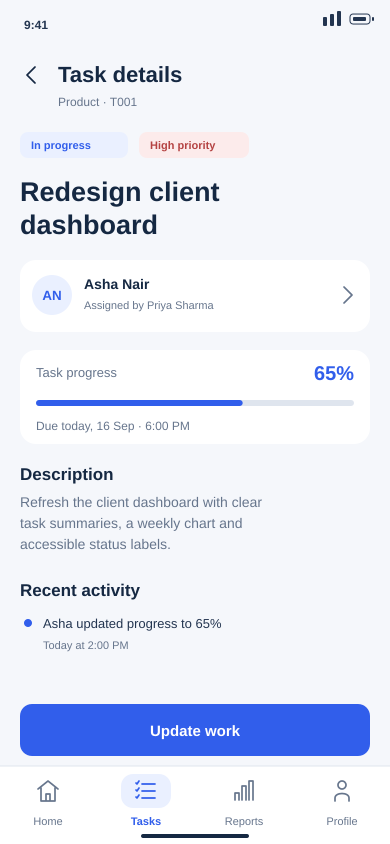
08. Work update
Employee · /tasks/T001/update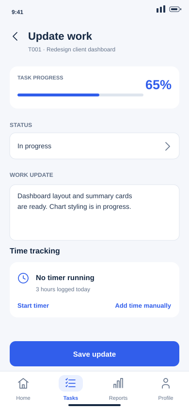
09. Assign task
Admin · /tasks/new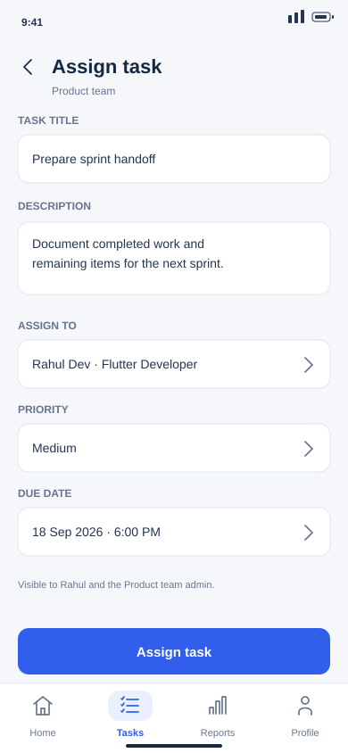
10. Employee profile
Employee; scoped admin view · /profile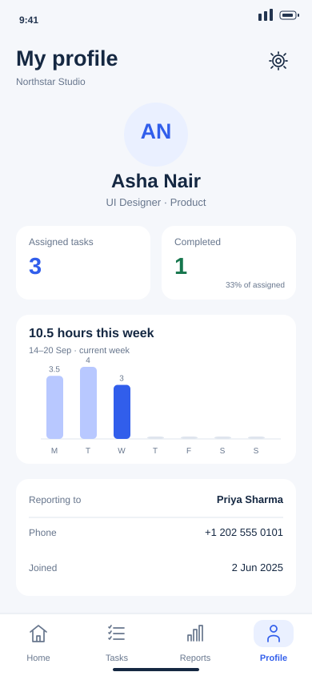
11. Company reports
Super Admin · /reports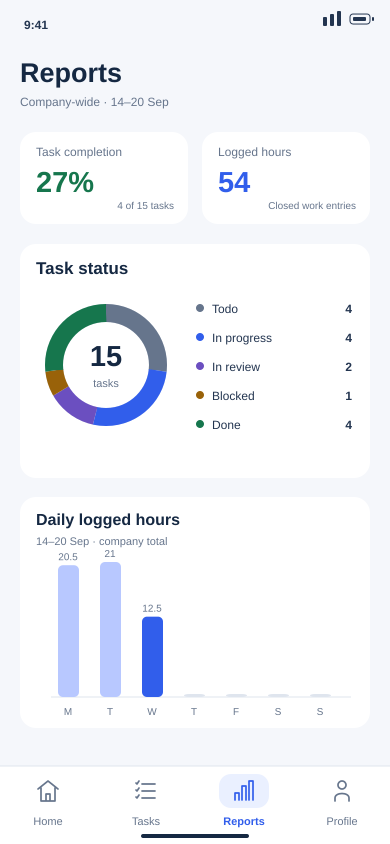
12. Employee directory
Super Admin; admin uses team filter · /employees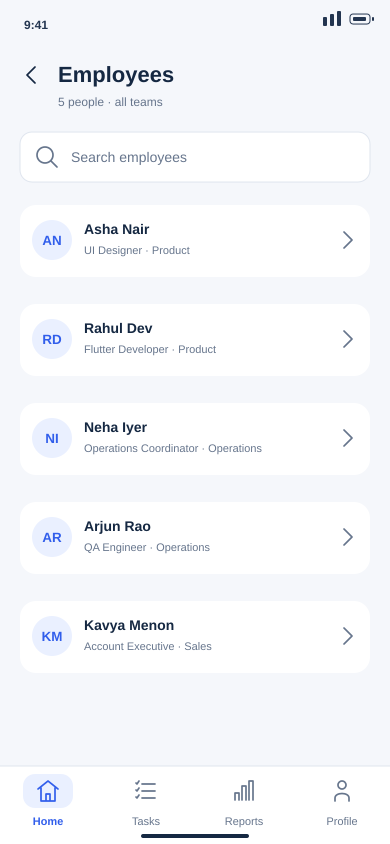
13. User management
Super Admin · /admin/users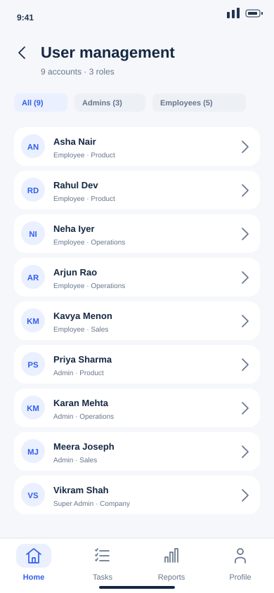
14. Edit user access
Super Admin · /admin/users · edit sheet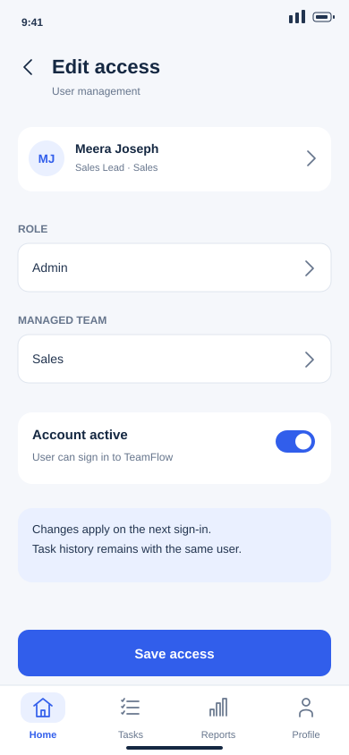
15. Company and announcements
All · /company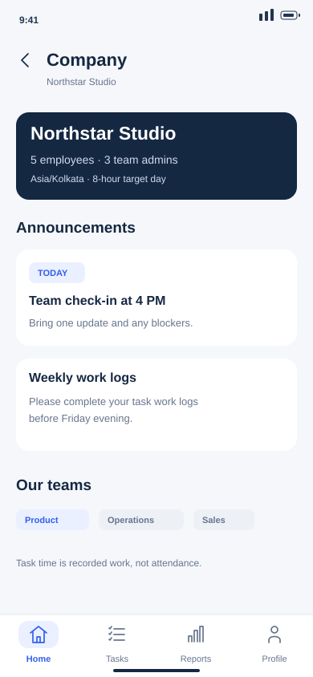
16. Settings and about
All · /settings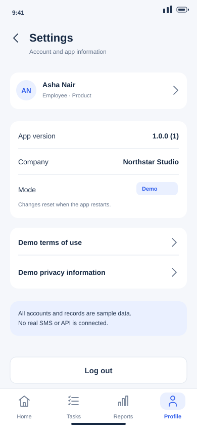
17. Admin task review
Admin · /tasks/T005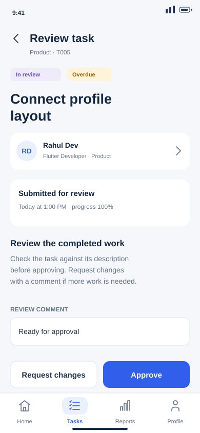